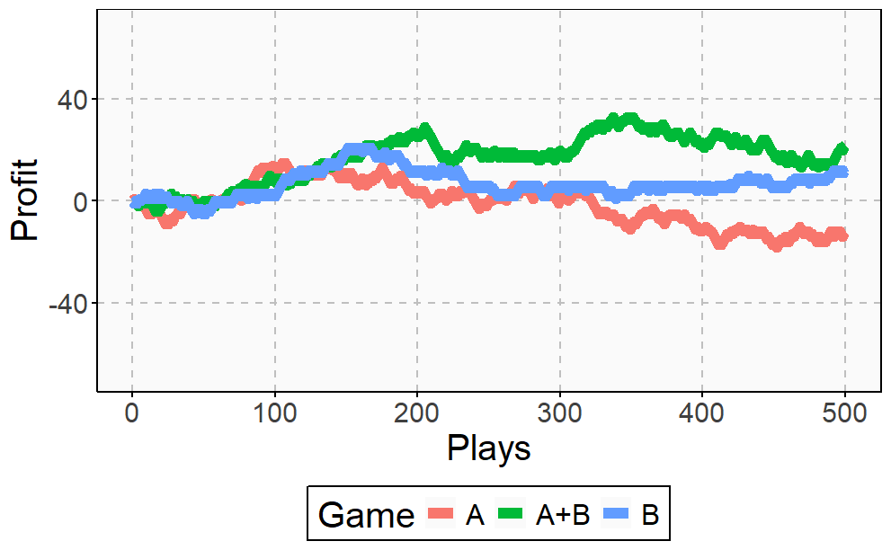
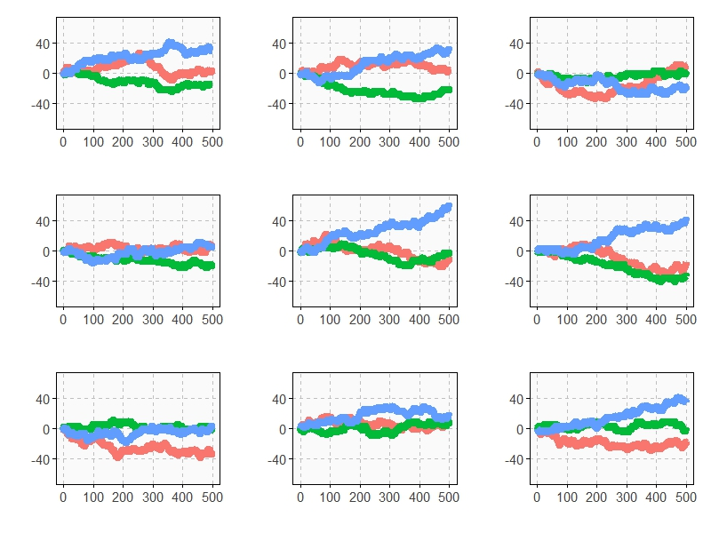
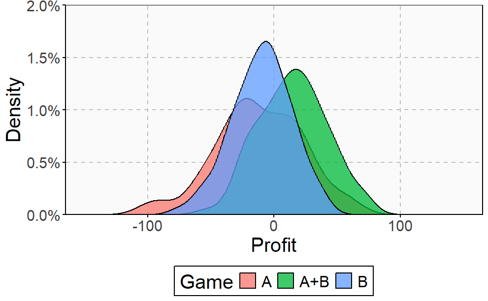

A combination of losing strategies becomes a winning strategy
Simple Gaming Strategy
Imagine you’ve got two games, and each one is more likely to make you lose than win. But here’s the twist - if you alternate between these games, you have a winning strategy. Crazy, right? Let’s make a simple gaming strategy.
Imagine you have two games: Game A and Game B.
Game A: You lose $1 every time you play.
Game B: If you have an even amount of money, you win $3; if it’s odd, you lose $5.
Now, if you play either game exclusively, you’ll lose all your money in 100 rounds. That’s pretty straightforward. But here’s where it gets interesting, if you alternate between playing Game A and Game B, starting with Game B, something unexpected happens.
Round 1: Start with $100. Play Game B, which is odd ($100 - $5 = $95).
Round 2: Play Game A, lose $1 ($95 - $1 = $94).
Round 3: Play Game B again, which is even ($94 + $3 = $97).
Round 4: Play Game A, lose $1 ($97 - $1 = $96).
Round 5: Play Game B, which is even again ($96 + $3 = $99).
Round 6: Play Game A, lose $1 ($99 - $1 = $98).
And so on, alternating between Game A and Game B. Even though individually both games lead to losing money, by playing them alternately, you end up with more money than you started with. Each cycle of Game B followed by Game A earns you $2.
In other words, while each strategy on its own may result in a loss when played alternately or in combination, they can yield a net gain. This phenomenon challenges traditional notions of winning and losing in game theory, demonstrating the counter-intuitive nature of probability and strategy.
It’s this wild idea that by combining two losing strategies, you can end up winning. It’s named after Juan Parrondo, who stumbled upon this mind-boggler back in 1996 while thinking about a funky machine called the Brownian ratchet. Parrondo didn’t just dream this up out of nowhere. He was tinkering with the Brownian ratchet, a brain teaser from physics that talks about getting energy from random heat. Parrondo’s brainwave showed that what seemed like a losing streak could be a path to victory.
What does this mean in the real world?
Well, it’s like finding a secret recipe for success in places you least expect. Think finance, biology, and even engineering. But hold your horses - some folks say this paradox isn’t as bulletproof as it seems once you put it under a microscope. But Parrondo wasn’t the first to notice this trick in the playbook of life. Nature’s been playing this game for ages, using combinations of duds to score big wins. It’s like evolution’s secret sauce. That’s the essence of Parrondo’s paradox combining losing strategies in a certain sequence can lead to winning.
Simulating the Gaming Strategy
Evolution of Profit Games Along 500 Plays
Imagine three unbalanced coins:
Coin 1: Probability of \(\text{head = 0.495}\) and probability of \(\text{tail = 0.505}\)
Coin 2: Probability of \(\text{head = 0.745}\) and probability of \(\text{tail = 0.255}\)
Coin 3: Probability of \(\text{head = 0.095}\) and probability of \(\text{tail = 0.905}\)
Now let’s define two games using these coins:
Game A: You toss coin 1 and if it comes up head you receive 1€ but if not, you lose 1€
Game B: If your present capital is a multiple of 3, you toss coin 2. If not, you toss coin 3. In both cases, you receive 1€ if a coin comes up head and lose 1€ if not.
Played separately, and both games were quite unfavourable. Now let’s define Game A+B in which you toss a balanced coin and if it comes up head, you play Game A and play Game B otherwise. In other words, in Game A+B you decide between playing Game A or Game B randomly.
Starting with 0€, it is easy to simulate the three games along 500 plays. This is an example of one of these simulations:

The resulting profit of Game A+B after 500 plays is +52€ and is -9€ and -3€ for Games A and B respectively. Let’s do some more simulations.

Evolution of Profit Games Along 1000 Plays
As you can see, Game A+B is the most profitable in almost all the previous simulations. This is a consequence of the stunning Parrondo’s Paradox which states that two losing games can combine into a winning one. If you still don’t believe in this brain-crashing paradox, you can see the empirical distributions of final profits of three games after 1000 plays:

After 1000 plays, the mean profit of Game A is -13€, -7€ for Game B and 17€ for Game A+B.
Application of Parrondo’s Paradox
Game Theory
Parrondo’s paradox is a hot topic in game theory, with researchers exploring its potential applications in various fields like engineering, population dynamics, and financial risk. While the original games may not be directly applicable, especially in stock market investing where they rely on the player’s capital, ongoing work aims to generalize the concept beyond its initial constraints.
Finance
Interestingly, parallels have been drawn between Parrondo’s Paradox and phenomena like volatility pumping and the two envelopes problem. In finance, textbook models have shown that combining investments with negative long-term returns into diversified portfolios can yield positive returns. Similarly, betting rules can be optimized by splitting bets between multiple games, turning a negative return into a positive one.
Biology
In evolutionary biology, the paradox has shed light on diverse phenomena like bacterial random phase variation and the evolution of less accurate sensors. Even in ecology, it’s been proposed that the periodic alternation between nomadic and colonial behaviours in certain organisms might be a manifestation of Parrondo’s paradox.
Versatile Field
Survival strategies in multicellular organisms have also been modelled using the paradox, sparking intriguing discussions on its feasibility and implications. Reliability theory has also found applications for Parrondo’s paradox. All in all, it’s a versatile concept with wide-ranging implications across disciplines.
Life’s a bit like a game of chance, isn’t it?
The Message This Paradox Convey
Sometimes, you’re dealt a hand that seems all lemons, no lemonade. But here’s where Parrondo’s paradox swoops in like a sly trickster, whispering secrets of turning the tables when the odds are stacked against you. It’s a reminder that life’s twists and turns aren’t always what they seem. Imagine you’re facing setbacks, losses, and disappointments. It’s easy to feel like you’re stuck in a downward spiral with no way out. But Parrondo’s paradox teaches us to embrace the unexpected, to mix a little sour with the sweet. Just like in the games, where alternating between losing strategies can lead to victory, in life, setbacks can be the very stepping stones to success.
It’s a mindset shift. Instead of seeing failure as a dead end, Parrondo’s paradox urges us to see it as a detour, a chance to pivot, reassess, and come back stronger. It’s about finding the hidden opportunities in adversity, about harnessing the power of resilience and adaptability. So, the next time life throws you a curveball, remember Parrondo’s paradox. Remember that losing isn’t always the end of the road; sometimes, it’s just the beginning of a new game, where the rules are waiting to be rewritten in your favour.
See Also
J. M. R. Parrondo, Parrondo’s paradoxical games
Reed, Floyd A (1 July 2007). “Two-Locus Epistasis With Sexually Antagonistic Selection: A Genetic Parrondo’s Paradox”. Genetics. 176 (3). Oxford: 1923–1929. doi:10.1534/genetics.106.069997. PMC 1931524. PMID 17483431. S2CID 28986153.
Further Reading
“Game theory: Losing strategies can win by Parrondo’s paradox” G. P. Harmer and D. Abbott, Nature vol. 402, p. 864 (1999).
Maria Carla Galavotti, Roberto Scazzieri, and Patrick Suppes, Reasoning, Rationality, and Probability, Center for the Study of Language and Information, 2008, ISBN 1-57586-557-2.
Visarath In, Patrick Longhini, and Antonio Palacios, Applications of Nonlinear Dynamics: Model and Design of Complex Systems, Springer, 2009, ISBN 3-540-85631-5.
References
Stutzer, Michael. “A Simple Parrondo Paradox” (PDF). Retrieved 28 August 2019.
Harmer, G. P.; Abbott, D. (1999). “Losing strategies can win by Parrondo’s paradox”. Nature. 402 (6764): 864. doi:10.1038/47220. S2CID 41319393.
D. Minor, “Parrondo’s Paradox - Hope for Losers!”, The College Mathematics Journal 34(1) (2003) 15-20